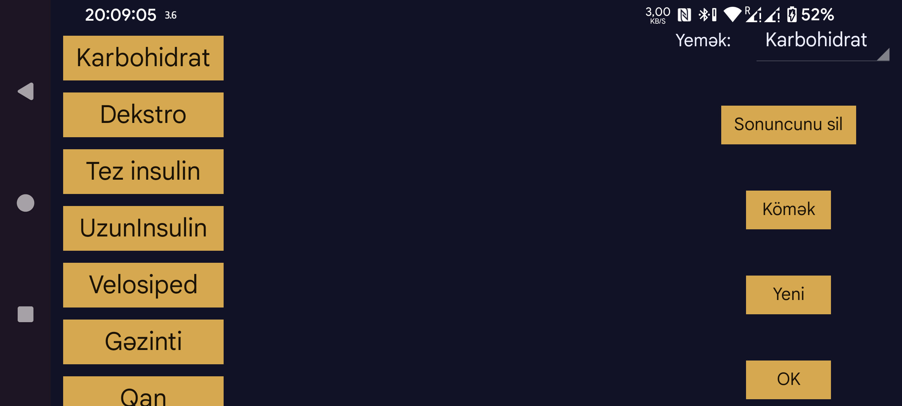

Burada insulin, karbohidrat və fiziki fəaliyyət kimi qeydlər üçün qrafikə əlavə olunan Miqdarların etiketlərini yarada, silə və dəyişdirə bilərsiniz. Artıq miqdar saxlamısınızsa, onun etiketi siyahıdakı mövqeyinə görə müəyyən olunur. Məsələn, ikinci mövqedəki etiketin adını dəyişsəniz, əvvəllər həmin mövqedə əvvəlki adla saxlanmış miqdarlar da yeni adla görünəcək.
Etiketi dəyişdirmək üçün adına toxunun.
Yemək bölməsində yeməklərin karbohidrat miqdarı üçün hansı etiketin istifadə ediləcəyini seçə bilərsiniz. Bundan sonra ortanın solundakı menyu → Yeni miqdar ekranında həmin etiket üçün Yemək düyməsi əlavə olunur. Bu düymə ilə tərkib hissələrindən yemək yarada, karbohidratların ümumi miqdarını hesablaya və həmin etiketlə saxlaya bilərsiniz. Saxlanmış miqdarın Yemək seçimini açmaqla yeməyin tərkibinə sonradan baxmaq da olar.